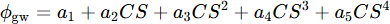
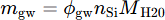
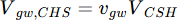
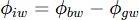
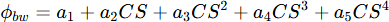
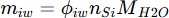
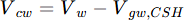

Water and pores in hydrated cement
The current version discriminates between following pores and water:
- Inner water - structural and inter-layer water in C-S-H, Vinner (cm³).
- Gel water/pores - Water being trapped in nanopores in C-S-H, Vgw,CSH (cm³). In the current version, the gel water in hydrated phases other than C-S-H (called phase water in Bharadway et al., 2025), Vgw,ph is not accounted for. The radius of gel pores is in the order of a few nanometers.
- Capillary water - Capillary water, Vcw (cm3) is the difference between the water in the system, Vw (cm³), and Vgw,CSH.
- Chemical shrinkage - The chemical shrinkage, Vcs (cm³), is the difference between the initial volume of the cement mixture and the volume of water and solids at a given reaction phase.
Calculation of gel porosity, gel volume and gel water in C-S-H
The method to calculate the gel porosity ϕgw depends on the model used to represent the C-S-H phase. An overview of the calculation methods are given in the table below.
|
Database |
C-S-H model |
Calculation Method |
|
CEMDATA |
CSHQ model |
If the C-S-H is represented by the CSHQ model (Kulik, 2011), the gel porosity is calculated based on the Ca/Si (CS) ratio of the C-S-H :  with a1, a2, a3, a4, and a5 equal to, respectively, -3.67474, 14.75335, -19.00002, 10.931594, and -2.266734. The mass of gel pore water, mgw [g], is obtained by:  where nSi is the number of moles of Si in the C-S-H, and MH2O is the molar mass of H2O. The volume of gel water, Vgw,CSH, is obtained by dividing mgw with the density of pure water at the current temperature and pressure. |
|
Otherwise |
The volume of gel water, Vgw,CSH, is calculated as:  where vgw is a constant value (0.23, REF) and VCSH is the volume of the C-S-H phase. |
|
Inner water in C-S-H
The inner water porosity is only available for the CSHQ model in CEMDATA. It is derived from the bulk water content in the C-S-H and in the gel pores.
|
Database |
C-S-H model |
Calculation Method |
|
CEMDATA |
CSHQ model |
If the C-S-H is represented by the CSHQ model (Kulik, 2011), the gel porosity is calculated based on the Ca/Si (CS) ratio of the C-S-H as:  where hiw is the inner water and hbw is the bulk water calculated as:  with a1, a2, a3, a4, and a5 equal to, respectively, -3.18553, 14.09635, -15.24216, 7.983487, and -1.542599. The mass of inner water, mgw [g], is obtained by:  where nSi is the number of moles of Si in the C-S-H, and MH2O is the molar mass of H2O. The volume of inner water, Viw is obtained by dividing miw with the density of pure water at the current temperature and pressure. |
|
Otherwise |
Not available (0) |
|
Calculation of capillary water
The volume of capillary water, Vcw (cm³), is calculated from the difference between the total volume of aqueous phase, Vw (cm³) and the volume of gel water, Vgw,chs (cm³):

Gel porosity, mass and volume are calculated with the function VolumeGelPores.
Bulk water, mass and volume are calculated with the function VolumeBulkWater.
Inner water, mass and volume are calculated with the function VolumeInnerWater.